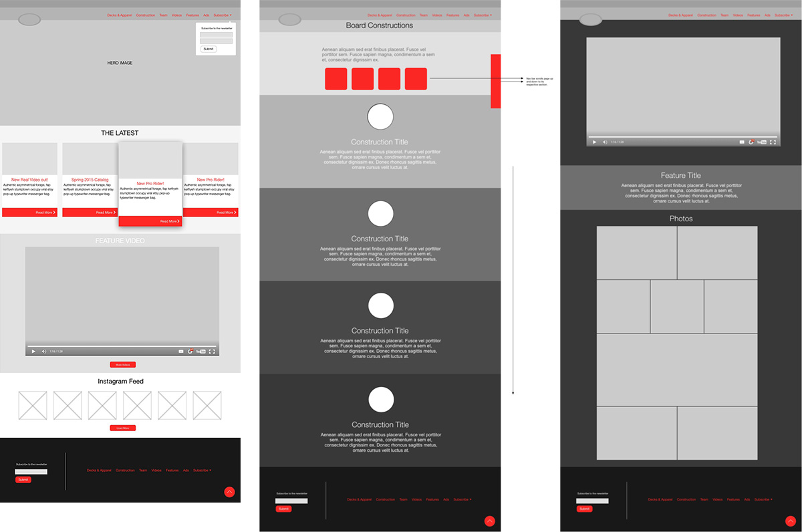

Minimal with focus on content
The overall necessity of the site involved updatability and responsiveness. Iitially we took Wordpress with a barebones starter theme using the Bootstrap CSS framework and began to design the site within the browser to quickly iterate possible real-world problems and/or interactions. With a limited team, this was the fastest way to not only prototype, but get a product up and running. We released a single page MVP using the same build, but without the back-end 5 months prior to the full product release and tested for speed, accessibility, and viewer response.
One of the key benefits of designing the site within the browser was the ability to focus on the responsive aspects on various screen sizes without having to go back to design in other software.
Wireframes are put together upon page request to detail flow 